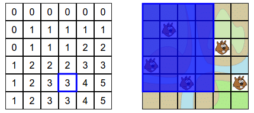
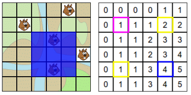
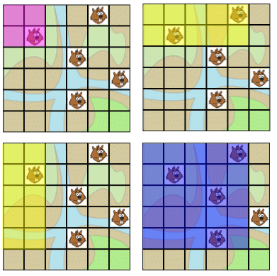
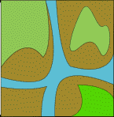
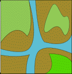

Solution
Pour résoudre le sujet, il faut comprendre ce à quoi correspondent les nombres de la grille.
On peut observer en parcourant de gauche à droite les lignes une par une qu'on trouve un castor à chaque fois qu'on passe sur une case qui a un changement par rapport à la ligne précédente. Une fois qu'on a trouvé un castor, les nombres sont alors décalés d'une unité par rapport à la ligne précédente. Si on trouve un décalage de plus d'une unité, c'est qu'il y a un second castor, comme c'est le cas pour le castor en bas à droite dans l'exemple.
Pour construire la réponse, il suffit donc de parcourir la grille ligne par ligne et de placer un castor à chaque fois qu'on observe un tel décalage. On obtient les positions ci-dessous.
Une autre manière de voir les choses consiste à observer que le nombre inscrit dans une case correspond au nombre de castors se trouvant dans la zone située en haut à gauche de cette case.
Vous pouvez vérifier, cette propriété se vérifie pour tous les nombres de la grille, comme par exemple pour le nombre 3 dans la case bleue ci-dessous, qui correspond au fait qu'il y a trois castors dans la zone bleue.

C'est de l'informatique !
La grille de nombre présentée dans ce sujet correspond à un « tableau cumulatif 2D » (où 2D signifie « 2 dimensions »). En effet, chaque case compte le nombre cumulé de castors qui se trouvent dans le rectangle entre le coin tout en haut à droite et la case considérée.
Un tableau cumulatif 2D est très utile car il permet de déterminer extrêmement efficacement le nombre de castors qui se trouvent dans une zone rectangle donnée. Supposons par exemple que l'on souhaite compter le nombre de castors se trouvant dans la zone bleue ci-dessous. Bien sûr, ici on « voit bien » qu'il y a deux castors, mais si la grille était beaucoup plus grande et contenait beaucoup de castors, ça serait moins évident de les compter de tête.
Pour compter les castors, il suffit de lire le nombre 4 situé dans la case bleue (qui correspond au coin en bas à droite de la zone bleue), d'ajouter le nombre 1 situé dans la case rose (qui correspond à la case située juste avant le coin en haut à gauche de la zone bleue), et de soustraire les deux valeurs situées dans les cases jaunes (qui se trouvent juste à l'extérieur des deux autres coins de la zone bleue). On fait 4 + 1 - 1 - 2 = 2 castors.

Les illustrations ci-dessous permettent de comprendre pourquoi ce calcul donne toujours le bon résultat. Chacun des nombres (4, 1, 1 et 2) situés dans les cases que l'on a considéré (la bleue, la rose, et les deux jaunes) correspond au nombre de castors situés dans la zone de la couleur associée, comme illustré ci-dessous.

Pour compter le nombre de castors qui nous intéresse, il faut compter tous ceux qui se trouvent dans le grand rectangle bleu, enlever ceux qui se trouvent plus à gauche et tous ceux qui se trouvent plus haut, c'est-à-dire ceux qui se trouvent dans les zones jaunes. Cependant, lorsqu'on a fait cela, on a soustrait deux fois les castors qui se trouvent dans la zone rose, car la zone rose est couverte par chacune des deux zones jaunes. Du coup, pour compenser, il faut rajouter le nombre de castors se trouvant dans la zone rose.
Bien sûr, sur un exemple aussi simple, on voit bien qu'il y a 2 castors dans la zone considérée. Mais le principe du tableau cumulatif 2D fonctionne tout aussi bien lorsqu'on a des millions de castors répartis sur des millions de cases, voire même des milliards de castors répartis sur des milliards de cases. On peut alors compter le nombre de castors contenus dans n'importe quel rectangle sans avoir besoin de regarder toutes les cases de la zone une par une : une addition et deux soustractions suffisent !
 
